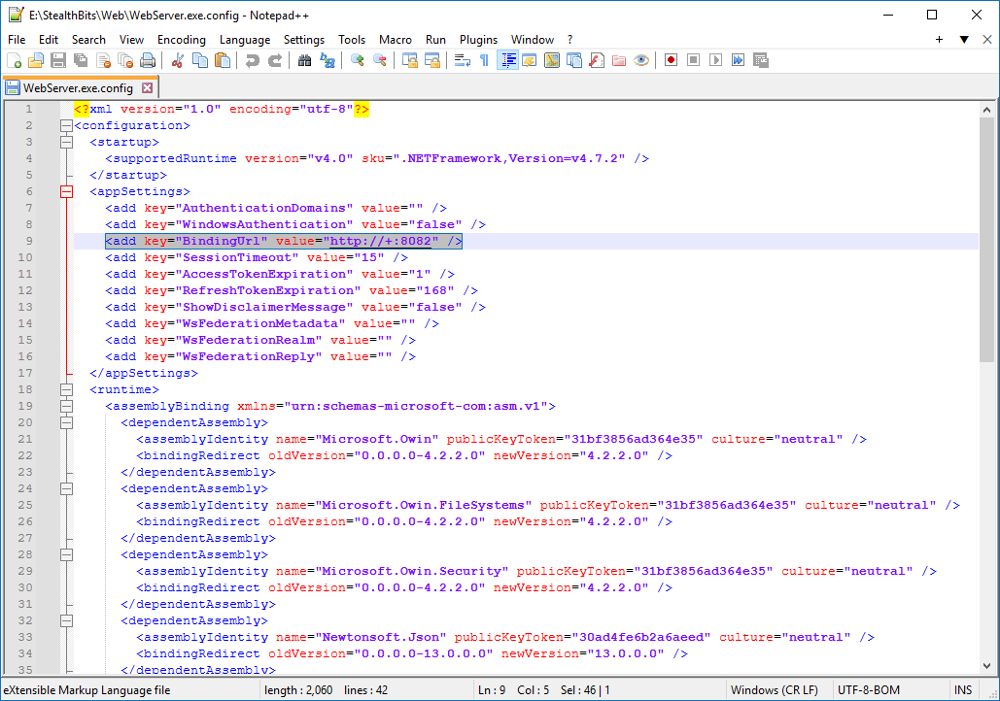

Symptoms
Refer to the following symptoms present in your Netwrix Enterprise Auditor environment:
-
When you attempt to access reports via Web Reports, the following error appears:
Refused to connect
-
The
%sainstalldir%SADatabase\Logs\Web\Service.logfile in Enterprise Auditor contains the following entry:%time_stamp% ERROR - Inner Exception %time_stamp% ERROR - System.Net.HttpListenerException (0x80004005): Failed to listen on prefix 'https://+:8082/' because it conflicts with an existing registration on the machine.
NOTE: The prefix may differ in your environment. Alter the prefix as necessary in the following instruction steps.
Cause
An existing application on the Enterprise Auditor host is actively listening on the affected port. Web Reports cannot be bound to the same port.
Resolution
NOTE: If the
BindingURLnode does not contain a port, refer to the default values of 80 and 443 for HTTP and HTTPS correspondingly.
Unbind the port from the application. Refer to the following steps:
-
Verify the Web Reports port—review the
BindingURLnode contents in the following document:%sainstalldir%Web\WebServer.exe.configThe
BindingURLincludes the port number and the protocol (HTTP or HTTPS). -
On your Enterprise Auditor host, run the following line in an elevated Command Prompt instance to retrieve all reserved URLs:
netsh http show urlacl -
Review the list to find the affected port. Run the following line to unbind the reserved URL:
netsh http delete urlacl url="%Reserved_URL_value%"The output should read
URL reservation successfully deleted. -
Run the following line to verify that the affected port has a bound SSL certificate:
netsh http show sslcertIf the output does not include the affected port, refer to the following article to learn more about the SSL binding: Reports via the Web Console — Securing the Web Console · v11.6.